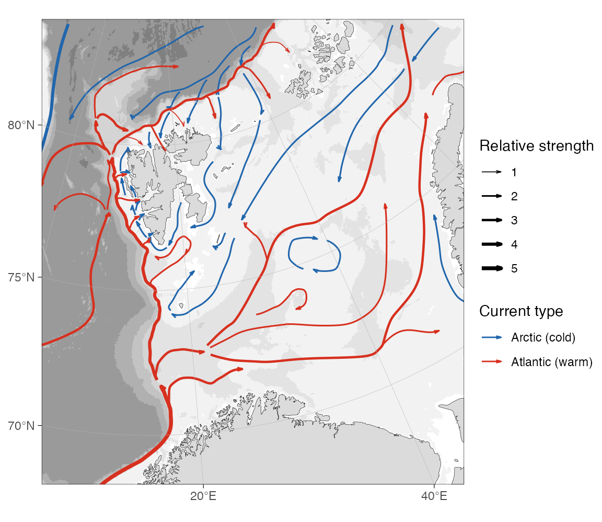
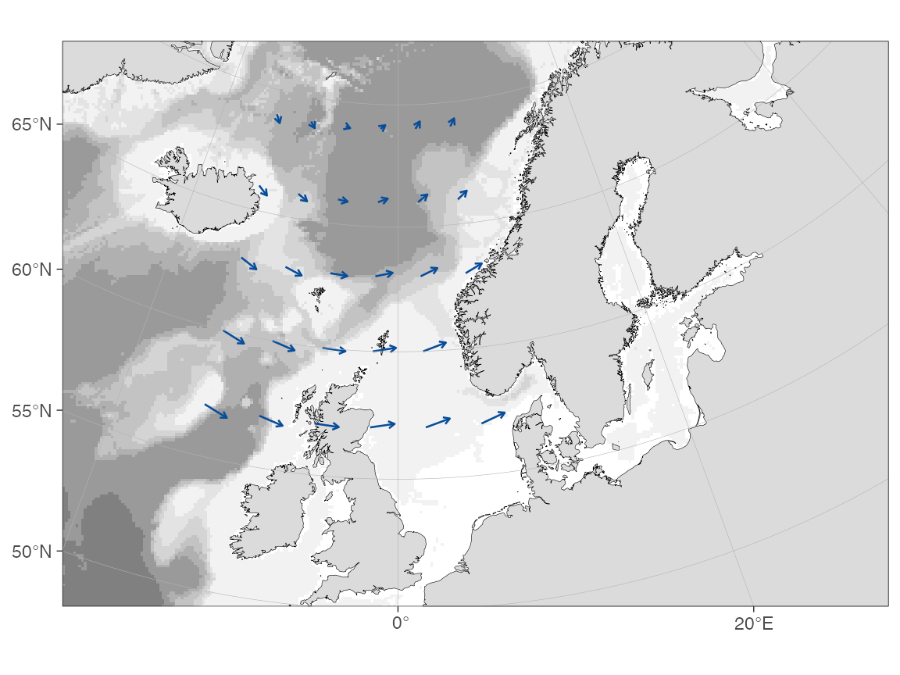
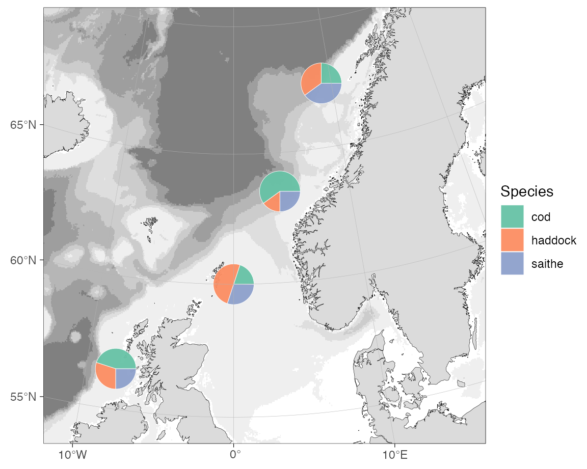
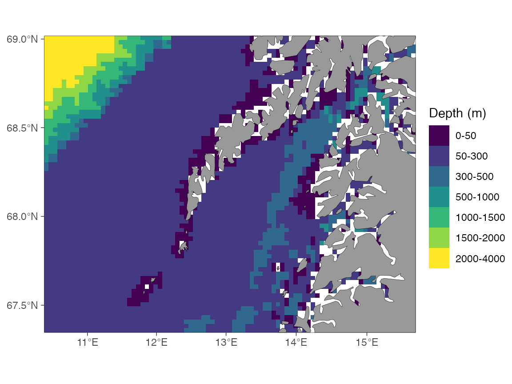

Adding graphical elements
Mikko Vihtakari (Institute of Marine Research)
19 June, 2026
Source:vignettes/adding-graphical-elements.Rmd
adding-graphical-elements.Rmdbasemap() returns a standard ggplot2
object, so points, paths, polygons, labels, and custom scales are added
with +. The one thing to watch is the coordinate system: at
high latitudes, and whenever crs is set, the map axes are
projected metres rather than longitude and latitude. Add geographic
coordinates to those maps through transform_coord(),
ggspatial::geom_spatial_*(), or geom_sf(),
which reproject on the fly.
Schematic current arrows
The Barents-Sea-currents
repository provides publication-style “Figure 1” current arrows
for the Barents Sea and North Atlantic. The example below downloads the
tidy Barents Sea CSV, builds one line per arrow, smooths it, and draws
it with geom_path(). Smoothing happens in projected metres
rather than in longitude/latitude, which would exaggerate the curves
near the pole.
barents_url <- paste0(
"https://raw.githubusercontent.com/MikkoVihtakari/",
"Barents-Sea-currents/master/tabular/barents_currents.csv"
)
barents_file <- file.path(tempdir(), "barents_currents.csv")
if (!file.exists(barents_file)) {
try(
download.file(barents_url, barents_file, quiet = TRUE, mode = "wb"),
silent = TRUE
)
}
# Offline fallback bundled with the vignette.
if (!file.exists(barents_file)) {
barents_file <- file.path("data", "barents_currents.csv")
}
cur <- read.csv(barents_file)
head(cur)
#> id long lat order group size type
#> 1 0 5.306694 66.34752 1 Atlantic_0.1 5 Atlantic
#> 2 0 5.306694 66.34752 2 Atlantic_0.1 5 Atlantic
#> 3 0 6.448918 66.73568 3 Atlantic_0.1 5 Atlantic
#> 4 0 9.080173 67.53121 4 Atlantic_0.1 5 Atlantic
#> 5 0 10.656624 68.29049 5 Atlantic_0.1 5 Atlantic
#> 6 0 13.568487 69.01010 6 Atlantic_0.1 5 AtlanticEach arrow is a group of ordered nodes. Assemble them into one
LINESTRING per arrow, reproject to the map CRS, and smooth
the nodes into curves with smoothr::smooth().
library(sf)
cur <- cur[order(cur$group, cur$order), ]
parts <- split(cur, cur$group)
arrows <- st_sf(
do.call(rbind, lapply(parts, function(d) d[1, c("group", "type", "size")])),
geometry = st_sfc(
lapply(parts, function(d) st_linestring(as.matrix(d[, c("long", "lat")]))),
crs = 4326
)
)
arrows <- smoothr::smooth(st_transform(arrows, 32633), method = "spline")
# Tidy projected coordinates for geom_path().
co <- as.data.frame(st_coordinates(arrows))
cur_lines <- data.frame(
x = co$X,
y = co$Y,
group = arrows$group[co$L1],
type = arrows$type[co$L1],
size = arrows$size[co$L1]
)The arrows sit on top of the basemap, so they would otherwise be
drawn over land. reorder_layers() pushes the land, glacier,
and grid layers back on top, tucking the arrows under the coastline.
current_arrow <- arrow(
type = "open",
angle = 15,
ends = "last",
length = unit(0.25, "lines")
)
reorder_layers(
basemap(
limits = c(5, 45, 68, 83.5),
crs = 32633,
bathy.style = "rbg",
land.col = "grey86",
legends = c(FALSE, TRUE)
) +
geom_path(
data = cur_lines,
aes(x, y, group = group, colour = type, linewidth = size),
arrow = current_arrow
) +
scale_colour_manual(
"Current type",
values = c(Atlantic = "#d7301f", Arctic = "#2166ac"),
labels = c(Atlantic = "Atlantic (warm)", Arctic = "Arctic (cold)")
) +
scale_linewidth("Relative strength", range = c(0.3, 1.3))
)
Velocity fields
For a gridded velocity field, compute the arrow endpoints, transform
both the start and end points to the basemap CRS, and draw the result
with geom_segment(). The example uses a small synthetic
field filtered to ocean positions; the same pattern applies after
reading u and v from a NetCDF file.
grd <- expand.grid(lon = seq(-14, 6, by = 4), lat = seq(57, 69, by = 3))
grd <- dist2land(grd, binary = TRUE, dist.col = "ocean", verbose = FALSE)
grd <- grd[grd$ocean, ]
grd$u <- 0.35 + 0.25 * cos((grd$lat - 58) / 4) # eastward component
grd$v <- 0.20 * sin((grd$lon + 5) / 6) # northward component
# Display scale only: a 1 m/s vector is drawn as 50 hours of drift.
km_per_ms <- 50 * 3.6
grd$lon_end <- grd$lon +
(grd$u * km_per_ms) / (111.32 * cos(grd$lat * pi / 180))
grd$lat_end <- grd$lat + (grd$v * km_per_ms) / 110.57
# Transform both ends to the basemap projection.
start <- transform_coord(
grd,
lon = "lon",
lat = "lat",
proj.out = 3995,
bind = TRUE
)
end <- transform_coord(
grd,
lon = "lon_end",
lat = "lat_end",
proj.out = 3995,
new.names = c("lon_end.proj", "lat_end.proj")
)
grd <- cbind(start, end)
basemap(
limits = c(-20, 30, 50, 70),
bathy.style = "rbg",
land.col = "grey86",
legends = FALSE
) +
geom_segment(
data = grd,
aes(x = lon.proj, y = lat.proj, xend = lon_end.proj, yend = lat_end.proj),
arrow = arrow(length = unit(0.12, "cm"), type = "open"),
colour = "#084d9a",
linewidth = 0.45
)
On a decimal-degree map the same code works without the
transform_coord() calls. Use those maps only when the
basemap itself is in EPSG:4326; many high-latitude limits select a polar
projection automatically.
Pie charts
Pie charts can be drawn as ordinary polygons. This avoids an extra plotting dependency and keeps the coordinate units explicit: after projection the pie radius is in metres. The helper below turns a row of category counts into one polygon per slice.
pie_polygons <- function(data, cols, x, y, r, n = 60) {
out <- vector("list", nrow(data) * length(cols))
k <- 1
for (i in seq_len(nrow(data))) {
values <- as.numeric(data[i, cols])
values[is.na(values)] <- 0
prop <- values / sum(values)
starts <- c(0, cumsum(prop)[-length(prop)]) * 2 * pi
ends <- cumsum(prop) * 2 * pi
for (j in seq_along(cols)) {
theta <- seq(
starts[j],
ends[j],
length.out = max(2, ceiling(n * prop[j]))
)
out[[k]] <- data.frame(
id = data$id[i],
slice = cols[j],
x = c(
data[[x]][i],
data[[x]][i] + cos(theta) * data[[r]][i],
data[[x]][i]
),
y = c(
data[[y]][i],
data[[y]][i] + sin(theta) * data[[r]][i],
data[[y]][i]
),
part = paste(data$id[i], cols[j], sep = "_")
)
k <- k + 1
}
}
do.call(rbind, out)
}
pies <- data.frame(
id = c("A", "B", "C", "D"),
lon = c(-8, 0, 4, 9),
lat = c(56.5, 60, 63.5, 67.5),
cod = c(45, 20, 60, 25),
haddock = c(30, 50, 15, 35),
saithe = c(25, 30, 25, 40)
)
slices <- c("cod", "haddock", "saithe")
pies <- transform_coord(pies, proj.out = 3995, bind = TRUE)
pies$r <- 90000 # metres
pie_df <- pie_polygons(pies, slices, x = "lon.proj", y = "lat.proj", r = "r")
basemap(
limits = c(-12, 16, 54, 70),
bathy.style = "rbg",
land.col = "grey86",
legends = FALSE
) +
ggnewscale::new_scale_fill() +
geom_polygon(
data = pie_df,
aes(x = x, y = y, group = part, fill = slice),
colour = "white",
linewidth = 0.15,
alpha = 0.95
) +
scale_fill_brewer("Species", palette = "Set2")
The basemap already maps bathymetry to fill, so insert
ggnewscale::new_scale_fill() between the basemap and the
pie layer to give the slices an independent fill scale.
Recolouring bathymetry
basemap() maps the binned bathymetry styles to a
discrete fill scale and the continuous styles
(rcb, rcg) to a continuous one. Either is
recoloured by adding a matching ggplot2 fill scale after
the basemap, exactly as in the Appearance section of the User
manual.
basemap(c(11, 16, 67.3, 68.6), grid.col = NA, bathymetry = TRUE) +
scale_fill_viridis_d("Depth (m)")
For a continuous style, use a continuous fill scale instead.
scale_fill_stepsn() additionally lets you set your own
breaks and a non-linear transformation, binning the continuous raster at
plotting time without changing the data. (This example needs the
higher-resolution continuous raster from ggOceanMapsLargeData;
it is skipped when that file is not available.)
basemap(
c(11, 16, 67.3, 68.6),
grid.col = NA,
bathy.style = "rcb",
downsample = 5
) +
scale_fill_stepsn(
name = "Depth (m)",
breaks = c(0, 50, 100, 200, 500, 1000),
limits = c(0, NA),
trans = "sqrt",
colours = colorRampPalette(
c("#F7FBFF", "#DEEBF7", "#9ECAE1", "#4292C6", "#08306B")
)(5),
na.value = "white"
)Custom depth bins with raster_bathymetry()
The scales above recolour bathymetry that ggOceanMaps has already
prepared. To bin a raw depth raster into classes of your own,
re-bin it with raster_bathymetry(): pass the cut points to
depths and hand the returned binned raster straight to
basemap() through shapefiles. Any grid that
stars::read_stars() can open works — the example reads a
local GEBCO file (see the Your own raster
section of the Bathymetry article), cropped to the shelf off
Lofoten.
# Your local GEBCO/ETOPO/IBCAO grid, e.g. set once with
# options(ggOceanMaps.userpath = "path/to/GEBCO_2025.nc")
gebco <- getOption("ggOceanMaps.userpath")
rb <- raster_bathymetry(
gebco,
depths = c(50, 100, 250, 500, 1000, 2000), # depth class boundaries
boundary = c(11, 16, 67.3, 68.6), # crop to the map region
verbose = FALSE
)
# Each depths value becomes a class boundary.
levels(rb$raster[[1]])The binned raster carries the depth classes as a factor, so it
behaves like any binned bathymetry: switch it on with
bathymetry = TRUE and recolour it with a discrete fill
scale. Here we use a sequential ColorBrewer palette as an example.
basemap(
limits = c(11, 16, 67.3, 68.6),
shapefiles = list(land = dd_land, glacier = NULL, bathy = rb),
bathymetry = TRUE,
grid.col = NA
) +
scale_fill_brewer("Depth (m)", palette = "YlGnBu", na.value = "white")raster_bathymetry() reports the intervals in
rb$depth.invervals. The same binned raster can be turned
into depth-contour polygons with vector_bathymetry() for
the pre-made-shapefile workflow described in the Customising shapefiles
article.